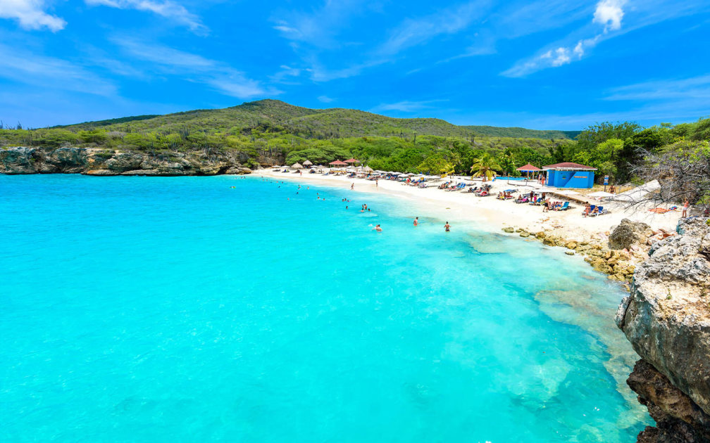

I'm Kyle Santiago and I'm from a small Dutch island called Curacao. We speak Dutch, Spanish, English, and a local Portuguese Creole called Papiamento. This website was made to showcase the beautiful country that I'm from so that more people can be aware of the paradise I grew up around.
Here we can see the downtown area called Punda. Here you can buy a nice drink and food while strolling around the various shops. You can get a painting done while you wait or watch the boats go by in the bay.
One of the main attractions for tourists are the beautiful beaches. On the west side of the island, there are some of the best beaches in the world. They all have crystal clear water and soft sand. Many people like to go snorekeling here as you can easily see all the fish near the corals.

This is the flag of Curacao. The stars represent the two islands of Curacao, where the big star is the mainland island and the small star represents a smaller island off the coast called Little Curacao. The blue represents the ocean that surrounds the island while the yellow stripe signifies the sun that shines brightly on us every day of the year.